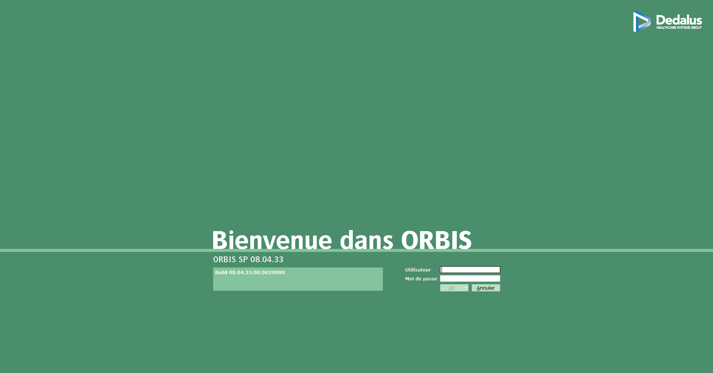

    <button mat-icon-button [matMenuTriggerFor]="aboveMenu" aria-label="Example icon-button with a menu" style="position: absolute;">
        <span>Poste</span>
    </button>
    <mat-menu #aboveMenu="matMenu" yPosition="above">
        <button mat-menu-item routerLink="/">
            <span>Médecin</span>
        </button>
        <button mat-menu-item routerLink="/">
            <span>Soignant</span>
        </button>
        <button mat-menu-item disabled>
            <span>??</span>
        </button>
    </mat-menu>

    
